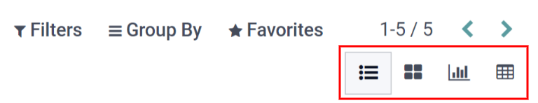

Servicios¶
Para preservar de manera óptima una flota de vehículos, es necesario llevar a cabo mantenimiento con regularidad y reparaciones periódicas. Es muy importante que programe reparaciones y gestione los servicios para toda la flota, esto garantizará que todos los vehículos se encuentren en buen estado de funcionamiento cuando se requieran.
Crear un registro de servicio¶
Para registrar un servicio, vaya al tablero principal de servicios desde la . Haga clic en Nuevo, esto abrirá un formulario de servicio. Complete la información correspondiente y haga clic en Guardar. Los únicos dos campos obligatorios son Tipo de servicio y Vehículo.
Los campos son los siguientes:
Descripción: agregue una breve descripción relacionada con el servicio.
Tipo de servicio: seleccione el tipo de servicio realizado en el menú desplegable o escriba uno nuevo y haga clic en Crear o en Crear y editar…. Esta lista no está preconfigurada en Odoo. Al crear una flota y registrar un servicio, es necesario que también cree los tipos de servicio.
Fecha: con el módulo de calendario seleccione la fecha en que el servicio se proporcionó o está programado para realizarse. Vaya al mes deseado a través de los iconos de flecha izquierda y derecha, luego haga clic en la fecha para seleccionarla.
Costo: proporcione el costo del servicio.
Proveedor: seleccione el proveedor que realizó el servicio desde el menú desplegable. Si el proveedor aún no forma parte del sistema, escriba su nombre y haga clic en Crear para agregarlo o en Crear y editar… para crearlo y editar su formulario. El formulario del proveedor permite ingresar otros detalles además del nombre, como su información de contacto.
Vehículo: seleccione el vehículo al que se le proporcionó servicio desde el menú desplegable. Al seleccionar el vehículo, el campo Conductor se completa y la unidad de medida para el campo Kilometraje aparece.
Conductor: el conductor actual asignado al vehículo seleccionado se completa al seleccionar el Vehículo. Si es necesario cambiar al conductor, puede seleccionar otro desde el menú desplegable.
Valor del odómetro: proporcione la lectura del odómetro cuando se realizó el servicio. Las unidades de medida pueden ser kilómetros (km) o millas (mi). La unidad de medida se completa al seleccionar el Vehículo, este dato se toma de su formulario. Para cambiar de kilómetros a millas, o viceversa, haga clic en el botón Enlace externo ubicado junto al vehículo que seleccionó en el campo Vehículo. Modifique la unidad de medida y luego haga clic en Guardar. La unidad de medida se actualizará en el campo Valor del odómetro.
Notas: escriba las notas para la reparación en la pestaña de notas ubicada en la parte inferior del formulario de servicio.

Lista de servicios¶
Para ver todos los servicios registrados en la base de datos, entre ellos las solicitudes antiguas y nuevas, vaya a la . Todos los servicios aparecerán en una vista de lista junto a sus detalles correspondientes.
Todos los servicios muestran la siguiente información:
Fecha: la fecha en que se realizó o solicitó el servicio o la reparación.
Descripción: una breve descripción del tipo específico de servicio o reparación que se realizó para puntualizar el servicio en específico.
Tipo de servicio: el servicio o la reparación que se realizó. Este dato se selecciona de la lista de servicios que debe configurar.
Vehículo: el vehículo específico que recibió el servicio.
Conductor: quién es el conductor actual del vehículo.
Proveedor: el proveedor específico que realizó el servicio o la reparación.
Costo: el costo total del servicio o la reparación.
Notas: cualquier información relacionada con el servicio o reparación que se documenta para agregar explicaciones.
Etapa: el estado del servicio o reparación. Las opciones disponibles son Nuevo, En proceso, Cancelado y Listo.
Ver servicios¶
Le recomendamos visualizar la lista de servicios en alguna de las formas preconfiguradas para ver mejor la información presentada. En la esquina superior derecha de la lista hay varios iconos disponibles en los que puede hacer clic, estas opciones presentarán los datos de diferentes maneras.
Vista de lista¶
La vista predeterminada de los servicios es la vista de lista. Todos los servicios aparecerán en una lista por orden cronológico, de más antiguo a más nuevo.
La información se puede ordenar por cualquier columna. Al pasar el cursor sobre el nombre en la parte superior de la columna aparecerá una flecha a la derecha del nombre. Haga clic en ella para ordenar los datos por esa columna específica.
El orden predeterminado es el orden alfabético descendente (A a Z). Vuelva a hacer clic en la flecha para invertir el orden y clasificar en orden alfabético ascendente (Z a A). La única excepción a esta clasificación es la columna predeterminada Fecha, que ordena la información en orden cronológico (de enero a diciembre) en lugar de orden alfabético.
Vista de kanban¶
Para visualizar los servicios por etapa haga clic en el icono de Kanban, es el segundo icono en la esquina superior derecha y está representado por cuatro cuadrados negros en un cubo.
Todos los servicios con el mismo estado aparecen en la columna correspondiente, desde En proceso hasta Cancelado. Para cambiar el estado de un servicio, solo haga clic y arrastre la tarjeta del servicio a la etapa deseada.
Vista de gráfico¶
Otra forma de ver los datos es en un gráfico. Para esto, haga clic en el icono de gráfico, es el tercer icono en la esquina superior derecha y está representado por un pequeño gráfico.
El gráfico muestra la información en un gráfico donde el eje X representa la fecha y el eje Y representa el costo. Cada columna representa un solo mes y luego se organiza por vehículo. Cada vehículo está representado por un color diferente y la barra de cada mes se divide por cada vehículo.
Vista de tabla dinámica¶
La última forma de visualizar los datos del servicio es en una tabla dinámica de hoja de cálculo. Haga clic en el icono de Tabla dinámica, es el último icono en la esquina superior derecha y está representado por una pequeña hoja de cálculo.
Los datos que aparecen en la tabla muestran el costo de cada servicio o reparación. Las filas representan a los proveedores y cada vehículo que recibió servicio aparece debajo de cada proveedor. La columna representa los diferentes tipos de servicio realizados.
Puede insertar la tabla en una hoja de cálculo o descargarla. Para agregar la tabla dinámica a una hoja de cálculo en Odoo, haga clic en Insertar en hoja de cálculo y aparecerá una ventana emergente. Seleccione la hoja de cálculo a la que debe agregar los datos desde el menú desplegable y haga clic en Confirmar. La hoja de cálculo aparecerá en la pantalla. Las hojas de cálculo se almacenan en la aplicación Documentos de Odoo. Para descargar la tabla en formato .xlsx haga clic en el icono de descarga.